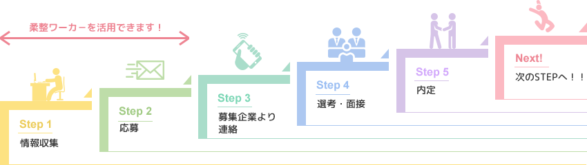

転職の流れ

-
情報収集
転職を決意したら、まずは情報収集が大切です。今の職場には何に不満があるのか、新しい職場に何を望むのか自分の考えや思いを一度整理してみると良いかもしれません。柔整ワーカーも情報収集段階より役に立ちます。柔整技術を活かしたどのような職場があるのか、給与の相場を見てみましょう！募集企業や医院のオフィシャルホームページやSNSをチェックすることも大切です。職場の実態を見て、自分が働く姿をイメージできるか確認してみましょう！
-
応募
柔整ワーカーの各求人ページより募集企業や医院へ応募することができます。求人ページの応募ボタンを押すと、応募フォームが立ち上がります。必要事項をご入力ください。応募情報は、募集企業や医院へ送付されます。柔整ワーカーへの会員登録は不要でご利用いただけます。また当柔整ワーカーは求職者様の応募情報等を保有しませんのでご安心の上ご利用ください。キープページへ保存した求人へまとめて応募ができる機能も近日リリース予定です。
-
募集企業からの連絡
応募が終了しますと、そこからは応募企業や医院とあなたのやり取りになります。応募先から選考の方法や面接の連絡が来るのを待ちましょう。履歴書や職務経歴書は必ず必要になるものですから、事前に準備しておいた方がよいですね。柔整ワーカーにも転職に関するお役立ち情報を掲載しています。転職理由や志望動機は必ず聞かれる質問です。しっかり事前に回答を準備しておきましょう。
-
選考・面接
各応募企業や医院により選考や面接の仕方は異なります。求人詳細の「応募までの流れ」をご確認ください。
-
内定
内定が出たら、円満退職に向けて退職の手続きや引き継ぎの準備をしましょう。